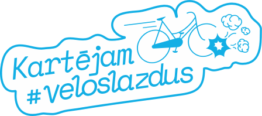

Tops
Par projektu
Ziņo!
Šaurība / nepārredzamība
Strauji pagriezieni
Segums (bedres, bīstamas apmales)
Cits
Ziņo!
Turpināt
Šaurība / nepārredzamība
Strauji pagriezieni
Segums (bedres, bīstamas apmales)
Cits
×
Lai balsotu, pievienojies ar Facebook.